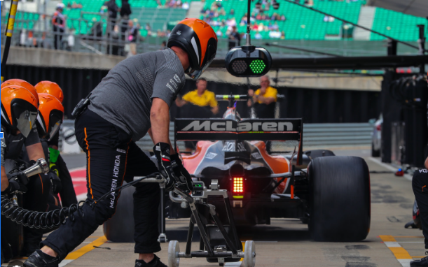

1. IPC
IPC são bastante comuns em qualquer computador moderno, na atual filosofia de sistemas operacionais, temos vários processos rodando ao mesmo tempo e dentro de um processo podemos ter várias threads.
Cada processo pode tentar bloquear ou acessar recursos que um outro processo quer usar. Imagine quando um mesmo processo tem várias threads onde cada uma quer fazer algo com o mesmo recurso: criamos uma grande confusão. Para esse tipo de situação, definimos o IPC (Comunicação entre Processos), um conjunto de técnicas que permitem que dois ou mais processos troquem informações de forma coordenada.
Analogia com Fórmula 1: cada equipe tem dois carros que precisam constantemente de troca de peças. Os mecânicos têm um canal de comunicação para cada carro, sem atrapalhar a manutenção do outro. Isso é basicamente o IPC.
2. Condição de Corrida
Trata-se de um problema que ocorre quando dois ou mais processos tentam acessar ou manipular um recurso compartilhado. Imagine que existem dois processos acessando a mesma variável x=0, e cada um deseja incrementar seu valor em 1.
O resultado esperado seria x=2, mas se ambos acessarem ao mesmo tempo, o valor pode ser atualizado incorretamente e resultar apenas em x=1.
Analogia com Fórmula 1: dois carros da mesma equipe chegam ao pit stop ao mesmo tempo, mas há apenas uma equipe de mecânicos disponível. Se não houver coordenação, eles podem se confundir e até colocar pneus do carro 1 no carro 2 ou vice-versa.
3. Exclusão Mútua
Exclusão mútua é o mecanismo que garante que apenas um processo acesse um recurso compartilhado por vez, evitando condições de corrida.
No exemplo da variável x, se existir um mecanismo que permita apenas um processo acessá-la por vez, teremos a garantia de que o incremento será feito corretamente.
Analogia com Fórmula 1: quando duas paradas no pit stop são necessárias, a equipe chama apenas um carro por vez — um entra na volta 10, o outro na volta 11. Isso evita confusão e garante que os mecânicos tenham tempo para preparar o atendimento.
4. Solução via Semáforo
O semáforo é uma das soluções possíveis para implementar exclusão mútua. Ele é uma variável especial associada a uma região crítica que funciona como um sinal, indicando se é seguro ou não acessar um recurso.
Analogia com Fórmula 1: após a troca de pneus, quando o carro vai sair do pit stop, há risco de colisão com outro carro na reta dos boxes (região crítica). Para evitar isso, cada pit stop possui uma luz (semáforo) que indica se o piloto pode sair com segurança.
Se o piloto não respeitar o semáforo, pode causar uma colisão — assim como processos que acessam recursos sem respeitar a sinalização.
